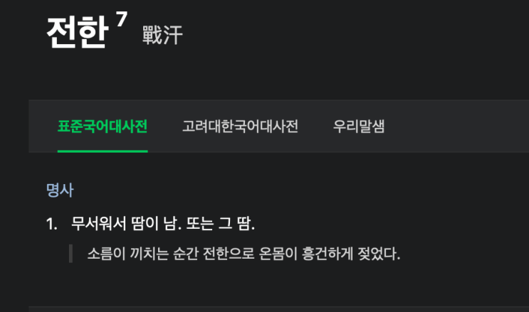
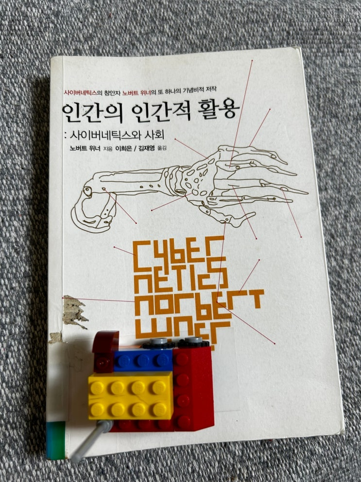

얼마전 이웃 블로거중 한 분이 리뷰를 적으셔서 흥미가 생겨서 읽어본 책이다.
"사이버네틱스" 라는 개념을 창시한 수학자이자 다재다능한 르네상스맨이었던 '노버트 워너' 가 1950년 출간한 책으로
그 전에 냈던 "사이버네틱스" 라는 책이 너무 어려워 일반인들을 대상으로 쓴 일종의 과학/철학 에세이 이다.
노버트 워너는 우리가 평소 듣는 '사이버 세상' '사이버 전사' '사이버펑크' '사이보그'
'시버러버'
등 표현에 쓰이는 '사이
버cyber' 라는 현대에 종종 쓰이는 일종의 접두사 표현을 탄생시킨 분으로 우리 사회에 이런 단어들이 쓰이는 것만 보아도
이 분이 얼마나 큰 영향을 지금까지 주고 있는지 느껴진다.
책은 에세이 형식을 띄고 있기 때문에 사이버네틱스와 수학, 통신, 과학발전, 사회, 미래의 자동기계의 활용 등에 대해 전
반적인 자신의 생각을 일반인들을 위한 언어로 설명하고 있다고는 하나... 사실 나도 읽다가 초반 세 번 네번 정도 졸아 떨
어질 정도로 쉽진 않았다 ㅋㅋ (특히 초반 30% 정도가 좀 그러함 ㅋㅋ)
그래도 그 초반 압박만 넘어가면 뒤는 비교적 쉬운 이야기들로 구성되어 있어서 쭉쭉 진도 나갈 수 있어서 다행이였다.
책의 구성에 대해서는 맨 뒤에 있는 옮긴이의 해설 부분이 참 좋다. 물론 이것만 보아서는 안되지만 그래도 이 책에 대해서
알고 싶어하는 분들이 있을 수 있으니 밑에 발췌한 내용을 남겨둔다.
(나보다 훨 나은 분이 좋은 글을 썼으니 그 분껄 보는게 인지상정)
이제 본격적으로 《인간의 인간적 활용〉의 주요 개념들을 살펴보 자. 머리말과 1장은 역사적인 방향을 제시하고
있다. 여기에서 위너 는 사이버네틱스를 물리학이라는 강력한 개념적 틀 속에 놓으려 하고 있다. 20세기 초 혁
명적인 물리학의 시대에 걸쳐 섬세한 관찰자로 살았던 위너는 물리학자들과 과학 철학자들에게 모두 익숙한 딜
레마 를 만났다. 그것은 뉴턴에 따른 결정론적 세계를 어떻게 기브스의 본성상 확률적인 세계, 아인슈타인의 상
대론적 우주, 하이젠베르크의 불확정성 원리와 화해시킬 수 있을 것인가 하는 문제였다. 위너는 자신이 궁극의
해답의 모양새를 파악했다고 생각하곤 했지만, 실제로 자신의 저작 대부분에서는 확률적 현상의 어떤 측면들로
논의를 국한시켰다.
계의 조직화 정도는 엔트로피라고 부르는 확률의 측도로 평가될 수 있다(2장), 엔트로피라는 개념은 원래 열역
학, 즉 열의 과학에서 비롯된 것이다. 그런 맥락에서 엔트로피는 단계가 매우 조직화고 분화되고 더 있기 힘든
상태로부터 더 있기 쉽고 분화되지 않고 혼돈스러운 상태를 향해 타락하는, 즉 굴러떨어지는 경향을 형식적 으
로 표현한 것이다. 이 과정은 닫힌계의 엔트로피가 증가한다는 것 으로 상징화된다. 엔트로피가 증가하는 일반
적 계와 달리, 살아 있는 생명체들(인간을 포함하여)이나 기계들은 엔트로피가 감소하는 (즉 더 많은 질서를 갖
게 되는) 국소적인 섬이 된다는 것이 위너의 논의이다.
엔트로피, 진보에 대한 인간의 믿음, 진화의 방향을 향하는 화살 등 에 관한 철학적 논변이 많이 있지만, 위너는
이러한 견해들 중 일부 를 새로운 방식으로 제시하는 데 그치지 않는다. 그는 또한 우주 속 에서 질서를 찾아내
려는 과학자들의 탐구를 질서의 부재 아니면 질 서에 반대되는 힘으로 해석될 수 있는 악마가 어떻게 방해하는
가 하 는 쟁점을 제기하고 있기도 하다. 이러한 논의는 아인슈타인의 "신은 속내를 알기 힘들지만 비열하지 않
다"라는 아포리즘에도 연관되고, 바보이거나 아니면 사악한 존재로서의 악마에 대한 전통적인 두 가 지 지각에
도 연관된다.
고정성과 학습에 관한 장(3장)에서는 생명체, 특히 가장 고도로 진화한 생명체가 어떻게 자신의 행동 패턴을 과
거의 경험에 바탕을 두고 수정하는지 하는 문제를 다룬다. 위너는 개미와 같은 곤충의 기계적 경직성(구속복)을
"거의 무한한 지적 확장"을 제공하는 인간의 기계적 유연성과 대비시키고 있다. 인간의 강점은 그 환경 속의 급
격한 변화에서도 자신의 인생 전체에 걸쳐 배워 나갈 수 있게 하는 생리학 적 소질을 사용하여 그 변화에 적응하
는 능력에 있다.
위너에 따르면, 학습은 피드백과 연관된다. 그 결정적인 개념은 공학자들의 제어이론에서 빌려 온 것이다. 이는
실제의 (그러나 예상 하던 것과는 다른) 과거의 작동의 결과를 다시 삽입함으로써 계의 거동을 수정하는 것으로
이루어져 있다. 피드백은 단순한 행위의 성공 또는 실패를 가리킬 수도 있으며, 행위의 전체적 정책이나 행동 패
턴 에 대한 정보가 되먹임될 때에는 피드백이 더 고등한 수준에서 일어 날 수도 있다. 그럼으로써 생명체가 그
이후의 행동에 대한 전략적 계획을 바꿀 수 있다. 이 피드백이라는 개념이 어떻게 가족, 회사, 사 회 전체와 같은
사회적 집단의 영역으로까지 더 넓게 확장될 수 있는
지는 쉽게 알 수 있다.
위너가 이 책을 쓴 이후, 여러 기술적으로 앞선 국가들의 경제 정 책이 점차 피드백을 제어하는 방식으로 바뀌고
있다. 컴퓨터는 무한 히 증가하는 데이터양을 점점 더 빨리 처리할 수 있고, 그 덕분에 우 리는 제조 과정, 재고
조사, 교통량 흐름, 신용 정책 등을 감시하여 보정할 수 있다. 우리가 피드백을 주고자 하는 정보에 관련된 매개
변수나 변인을 공식으로 만들 수 있는 한, 우리 사회가 이전의 행동 이 유발했던 결과로부터 학습을 통해 기능을
향상시키는 데 한계는 없을 것이다.
세 번째 핵심 개념은 정보이다(4). 엔트로피와 피드백은 과학적 으로 정확히 정의되지만, 정보는 사람들에게 다
른 의미로 다가온다.
여기에서 정보이론의 방식으로 정보에 대한 수학적 공식을 유도하는 것은 핵심이 전혀 아니다. 그러나 분명하게
해야 할 것은 커뮤니케이 션 체계에서 순환하는 '상품'은 그 물리적 형태가 무엇이든지 상관없 이 정보라는 점이
다. 일반적으로 정보의 원천이 있다. 전달하려는 예 시지를 정식화하는 발화자나 저자가 그 예이다. 그다음 이
메시지는 구두 또는 문자의 형태가 된다. 즉 음성학적으로 부호화된다. 발화자가 전화기를 사용한다면 음성 신
호가 전기적 형태로 기록될 것이 자가 전화기를 사용한다면 음성 신호가 전기적 형태로 기록될 것이 며 이는 멀
리 떨어져 있는 기지국(수신자)으로 전달된다. 여기에서 전기 신호는 수신자가 이해할 수 있는 음향학적 형태로
다시 변환된다.
여기에는 발화자와 수신자가 같은 부호를 갖고 있다는, 다시 말해서 같은 언어 공동체에 속한다는, 그리고 전화
기 채널의 잡음이 커뮤니케이션되어야 할 정보를 파괴할 만큼 메시지를 망가뜨리지 않는다는 조건이 따라 붙는
다.
우리가 일단 생명체와 사회와 기계에서의 정보 개념의 설득력을 알게 되면, 정보가 물질, 에너지, 전하와 같은
과학의 위대한 개념들 과 같은 반열에 속하게 되는 일도 충분히 가능하다. 주변의 세계에 우리를 맞추는 것은 감
각이 제공하는 정보의 창에 따라 달라진다. 문 화는 우리가 축적해 온 방대한 정보 저장소의 적절한 사용에 따라
달 라진다. 그리고 실질적인 의미에서 특수화된 정보의 접근은 경제력 이나 정치력이나 군사력의 강점과 맞먹는
피드백의 한 형태이다. 그 러므로 점점 더 정보에 의존하는 우리 사회는 프라이버시와 비밀성 내지 커뮤니케이
션의 물리적 채널(즉 텔레비전, 라디오, 인터넷 등)의 사용 권리 및 그에 관련된 법규들과 같은 문제들에 대한 합
리적인 표 준을 정립할 필요가 있을 것이다.
이 대목에서 위너의 관심은 자연스럽게 언어 능력이라는 인간만 이 가진 선물에 대한 논의로 이어진다. 위너는
인간의 언어에서 중 요한 핵심은 뇌 속에 새겨져 있는 어떤 것이라고 본다. 이는 기호 처 리, 부호화, 부호 해독
에 대한 관심사이다. 위너는 이것이 언어의 역 사에 관한 자기 자신의 "아마추어적인 고찰"이라고 겸손하게 말
하고 있고, 사실 몇몇 구절은 현대적인 학문의 기준에 비추어 보면 실제로 유효하지 않지만, 그의 논의는 현대
구조언어학이 발전하는 토대를 마련해 주었다.
지금까지 말한 세 가지 주제, 엔트로피와 피드백과 정보는 이 책의 구조에서 핵심을 이룬다. 이 세 주제는 법률
체계와 같은 제도(6 장), 사회 복지에 필수적인 내부 커뮤니케이션 채널의 상태 유지에 (7장), 우리 사회의 지식
인과 과학자들의 역할(8장) 등으로 이어진다.
1차 산업 혁명과 2차 산업 혁명을 비교하는 장(9장)은 기계와 공장 이 점점 더 자동화되어 온 맥락에서 산업 사
회의 진보를 추적하고 있 다. 몇몇 용어와 사례는 이미 낡은 것이 되었지만, 위너가 여기에서 관심을 갖는 것은
매우 긴박한 경제적 결과, 즉 자동화가 만들어내는 실업과 같은 것이다.
커뮤니케이션 기계에 관한 장(10장)은 다양한 자동 기계들이 커뮤 니케이션하는 기계의 가능성(지금 '인공 지
능'이라고 부르는 분야)을 탐구하는 데 이용되거나, 아니면 그런 기계들이 상실된 인간의 기능을 대신하는 보조
장치로 이용될 수 있음을 잘 보여 주고 있다. 세부적인 예들은 역시 조금 낡은 것이 된 것도 있지만, 여전히 타당
한 점은 만일 우리가 점점 더 인공적인 세계 속에서 성공적으로 살아가고자 한다면 과학자가 인간의 본성이 무
엇인지 알고 그 내재적인 목적이 무엇인지 알아야 한다는 점이다.
위너는 기계는 그 자체로 사회를 위험하게 만들지 않으며 위험의 원천이 되는 것은 사람이 기계로부터 무엇을
만드는가라는 점임을 역설하고 있다. 위너는 우리가 적합한 '노왓', 즉 우리의 목적이 무엇 이며 어떻게 그것을
가장 잘 이룰 수 있는가를 명료하게 이해하지 못 한 채 기술적인 '노하우'의 노예가 되어서는 안 된다고 호소한
다. 이 구절은 위너가 보여 준 예언자적 모습의 최고봉이다. 우리 환경의 질 에 대한 기술적 위협을 다룬 최근의
많은 논의들의 전조를 여기에서 찾을 수 있다.
마지막 장에서 위너는 과학자가 싸워 온 악마의 본성에 관한 질문으로 되돌아간다(11장). 자연은 법칙에 종속되
어 있으며, 과학은 혼 동과 무지를 극복하려 하면서도 외고집의 악의를 극복하려 하지 않 는다는 자신의 믿음을
확인하면서, 위너는 자신의 개인적인 신앙 고 백으로 끝을 맺고 있다. "과학은 인간이 자유로이 신념을 가질 때
에만 번성할 수 있는 생활 방식이다." 그러나 위너는 외부의 명령으로 강제된 신념은 신념이 아니라고 덧붙인다.
가장 개인적으로 놀라웠던 파트는 10장으로 지금은 우리가 '인공지능' 이라고 부르는 것에 대한 이야기이다. 분명 70년
전에 씌여진 책인데 마치 지지난주에 과학 기사에 나온 이야기 처럼 현재 인공지능의 원리와 위협에 대해서 상세히 기술하
고 있다.
기억에 저장된 대로 정석 첫 수와 막판 수를 두는 인간과 마찬가 지로 이 기계 역시 비슷한 방식으로 첫 수와 막
판 수를 둘 것이다.
더 나은 기계라면 이제까지 두었던 모든 게임을 테이프에 기록하고 과거에 두었던 모든 게임
을 통해 드러난 과정을 보충하여 무언가 적당한 것을 찾을 수 있을 것이다. 간단히 말해서 학습에 의한 과정인
셈이다.
학습이 가능한 기계를 만들 수 있다는 것은 이미 이야기했지만, 이러한 기계를 만들고 응용하는 기술은
여전히 매우 불완전하다.
학습 원리에 따라 체스게임을 하는 기계를 설계하는 것은 아직 시기 상조이지만, 아마도 아주 먼 미래의 일만은
아닐 것이다.
학습하는 체스게임 기계는 어느 정도 수준의 사람과 대결하는가에 따라 그 성능이 크게 달라질 것이다.
페르 듀발이 언급한 통치 기계는 그것이 자율적으로 인류를 통제 할지도 모른다는 위험 때문에 두려운 것이 아
니다. 인간의 목적성 띤 독립적인 행동을 천분의 일 정도만 나타내기에도 그 기계는 너무나 유치하고 불완전한
수준이다.
그러나 그 진정한 위험성은 다른 곳에 있다. 즉, 그 기계들 자체는 무력한 존재이지만 어느 한 인간이
나 인류 전체가 나머지 인간들에 대한 통제력을 증가시키는 데 이 기계를 사용할 수도 있다는 점이다.
혹은 기계
자체를 이용하지 않더라도 정 치 지도자들이 마치 인간을 기계적으로 파악된 것처럼 인간의 가능 성에 대해 인
색하고 무관심한 정치적 기법을 사용하여 백성들을 통제하려 할 수도 있다. 이제까지 인간이 기계에게 지배당하
지 않을 수 있었던 것은 기계의 최대 취약점 덕분인데, 아직까지 기계가 인간 상황의 특징이라 할 수 있는 광범
위한 가능성을 고려하지 못한다는 점 이 바로 그것이다. 기계의 지배는 엔트로피가 증가하는 최후 단계로 서의
사회, 즉 확률은 무시할 만큼 작고 개인들 사이의 통계적 차이는 없는 그런 사회를 전제 조건으로 한다. 다행스
럽게도 우리는 아직 까지 그러한 상황에 이르지 않았다.
아니 이 때는 트렌지스터도 제대로 안나왔을 때라고 (48년 발명)
이 땅에서는 전쟁 나고 먹을 것도 없어서 난리였는데 역시 강대국들은 그 사상의 기틀부터가 다르다는 생각이 들었다.
이 책은 읽고 나서 한 번으로는 이해가 잘 안되는 부분도 있고 하여 집에 두고두고 또 봐야겠다고 생각했는데 중고 20만원
인거 실화냐...
물론 필요하면 국회복사서비스를 이용하는 법도 있다고 하니 나중에 한 번 써봐야 겠다.
절판된 책 구하는 방법 - 국회 도서관 복사 서비스
요즘은 웬만한 도서들은 E-BOOK이나 PDF로 출판되고, 어지간한 자료들은 유튜브와 구글링을 통해 구할 수 있습니다. 하
지만, 공부를 하다 보면 오래된 학술 서적이나 절판된 책들을 구하지 못해 곤란한 경우가 종종 발생합니다. 절판이 되었더
라도 다행히 E-BOOK으로 출간된 버전이 있다면 그나마 다행이지만, 이 조차도 없는 경우 중고책을 뒤져봐야 하는데...간
혹 수요가 엄청난 책들의 경우 무시무시한 중고가가 형성되어 있는 경우도 많습니다. 중고샵에서도 구할 수 없거나 너무
비싼 경우에는 어떻게 해야 할까요? 소장용 도서를 구하는 것...
nozeroslope.tistory.com
끝.